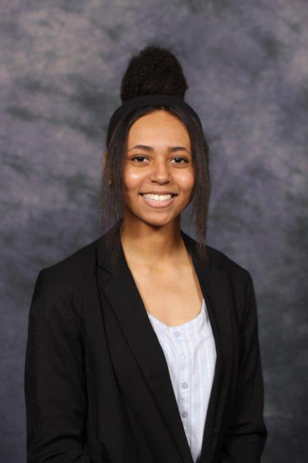

About
A third year Computer Science undergraduate student at Rose-Hulman Institute of Technology with an interest in social media, education, and web development. I am ready to assist a company's needs through software development, UX design, web development, and database administration.
On my free time I enjoy free-time watching anime, drawing, and working out. My favorite anime is Dragon Ball Z. There are so many reasons why It is my favorite, but I was save explaining that for later. My favorite character of all time is Vegeta. He is just the perfect representation of a male. I also like how different he is from other archetypes in shows. He is quite different for a lot of other characters. My second favorite characteris is Bakugou Katsuki.